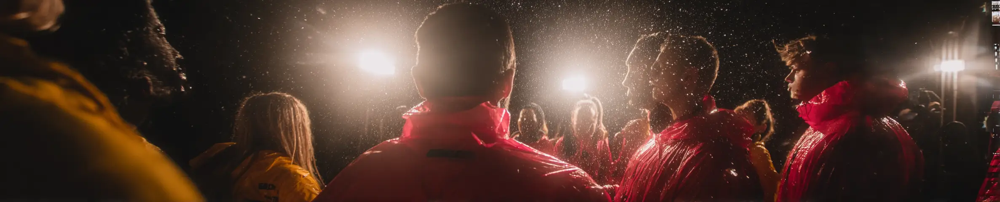

A smart solution for stress-free festival parking.
Get the AppAfter an amazing day of music and fun at a festival, you're tired and ready to head home, but suddenly you realize you can't remember exactly where you parked your car among the thousands of vehicles. Festival parking is notoriously chaotic. You're often directed to park in temporary lots, fields, or unmarked areas. With no proper streets or landmarks, finding your car after the event can turn into a real nightmare. GPS Navigation app solves the problem by guiding you straight back to your car.
Designed specifically for remote locations and large events.
No cell service needed in remote locations
Uses GPS for precise location marking
Easy to follow arrow when you are tired
Real-time distance to your destination
Quickly find your saved parking spot
Mark your car’s location in seconds
This same app works great for other large events too.
Instead of ending your perfect festival day with a frustrating search for your car use technology to your advantage. Enjoy the show, dance your heart out and never worry about finding your car again.
Download GPS Navigation Hiking Compass